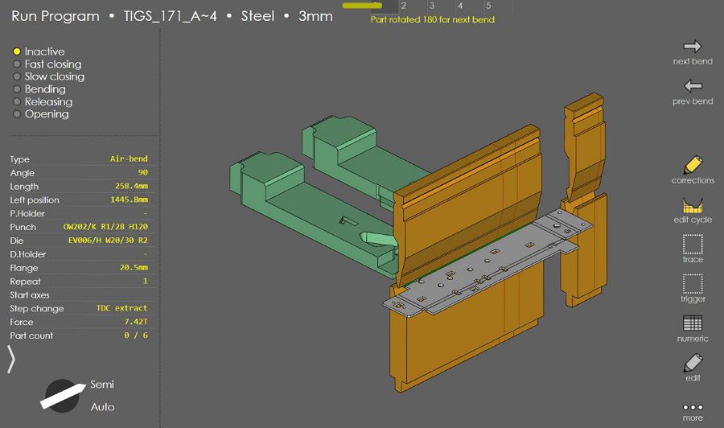
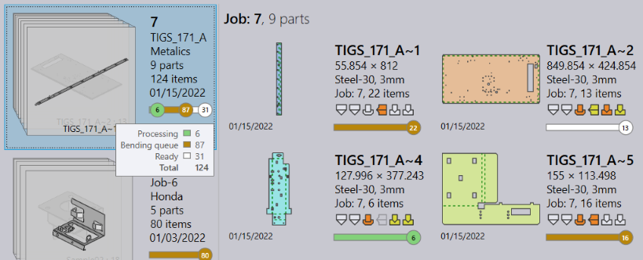
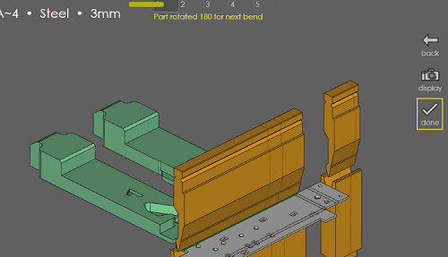
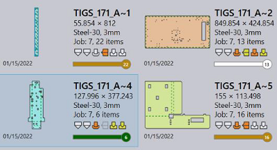

Select a program and use the run command to load the program for running.

Praxis Job and Part statuses are updated to reflect the parts-in-progress.

Press the done button on the run page (depending on your screen height, you may have to press the more to bring this in). The job is updated with the completion status and the program is removed from the machine production queue.
 